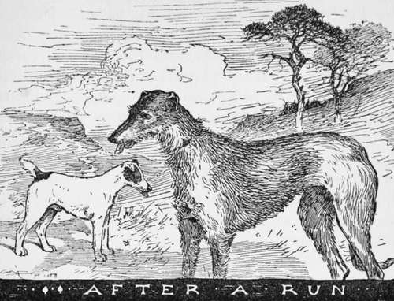

Grouse And Partridge Driving
Description
This section is from the book "Horses, Guns, And Dogs", by J. Otho Paget, George A. B. Dewar A. B. Portman, And A. Innes Shand. Also available from Amazon: Horses, guns and dogs.
Grouse And Partridge Driving
At the beginning of my remarks on these forms of sport, to many people the most fascinating there are, I would draw the careful attention of my readers, of no matter what age, to the fact that they are far more dangerous than shooting in covert. The reason is not hard to find. Owing to birds which are driven usually flying low, unless in the case, which sometimes but not often happens, of partridges being put over fairly high belts, they fly at a height which makes a careless shot extremely dangerous for his neighbours. This being so, it is most important for the shooter never by any possible chance to follow a bird round with gun to shoulder, as I have seen some men do who ought to have known better; also, unless the bird shot at is quite high enough to be perfectly safe, on no occasion shoot at it except well in front of your butt, or else well behind the line of guns. In turning round to shoot at birds that have passed the butts, your gun should not be put up to the shoulder, as I said before, until you have faced about in the butt or whatever place of hiding you may be in. Careful observance of these rules may help to prevent accidents which have so frequently occurred in driving, by which many a man has lost an eye. Another most important thing is not to fire shots at anything between drives, as many nasty accidents have happened by people shooting whilst going from one set of stands to another, for then men are often out of line taking what they think is a short cut. Another really sound piece of advice is, take out cartridges when getting over a fence, however small, or across a ditch. In these days of hammerless-ejector guns it is surely but little trouble, and if the cartridges remain in the gun, a slip, however slight, may bring about an accident which may lead to appalling results, even with the gun at " safety".
Having given this lecture, which is not written in any spirit of interference, but owing simply to the knowledge from long experience that it should be followed by everybody, I will turn to the sport. To commence with, we will talk about that most fascinating game, grouse - shooting, which has greater charm for many sportsmen than any other kind of sport, because of the wild and interesting country in which it is usually pursued. Of course for big bags Yorkshire stands far ahead, and at Wemmer-gill, High Force, Bolton Abbey, Askrigg, etc, huge numbers of grouse have been accounted for, which, take them all round, are not to be beaten. The biggest thing ever done single-handed was the work of that fine shot, Lord Walsingham, he having on the Bluberhouse, Yorkshire, killed by himself upwards of a thousand grouse in a day's driving. This shows extraordinary endurance, as I believe on the day he made this bag, Lord Walsingham fired well over thirteen hundred cartridges —an immense strain on the nerves. Probably two of the finest moors out of Yorkshire are Abbey-stead in Lancashire, and Ruabon Hills moors in Wales. Then in Scotland, places with a deservedly good reputation are Moy, Hunthill, Lochendorb, Meallmore, and the first of these moors holds the record for sport on the other side of the Border.
Now to turn to the actual sport of grouse-driving and how it is done. Of course almost everywhere in Yorkshire birds are driven even on the " Twelfth," as they would never allow people to get near by walking, but in most parts of Scotland grouse are " walked " early in August, and driving only taken to when the birds have become too wild to get near in any other way. A young grouse sitting well is probably the easiest of all birds to shoot early in the season, but not when it has grown wilder; and an old bird who sits watching on the top of a hillock, and disappears down a gully almost the moment the sportsman spies him, is very hard to kill. At the notable moors of the far North I have mentioned, no walking is done, and even by the 20th of August grouse at, we will say, Lochendorb, where a lot of the ground is flat and birds can be seen for a long way, are easily missed ; whilst if they come full speed off some of the "tops" with the wind behind them, the man who cannot get off his gun quickly will find himself with a very limited number of birds to pick up when the drive is over.
Talking of the drive being over reminds me that nothing is more reprehensible or dangerous than for a man to move out of his butt until the beaters have got quite past, as there may easily be some birds sitting tight close to the butts; and by moving you spoil the sport of other people, even if happily it leads to no wretched accident. One of the things about grouse-driving which some people find boring, especially in Scotland, where it is in many parts extremely difficult to get a sufficient number of beaters, is the long wait between the drives ; but then if the day is only fine, and the sportsman wise enough to be pleased by the charms of scenery which he will find to perfection in the majority of moors at any rate north of Perth, the time soon passes. Besides, if this sort of thing does not appeal, there is always a quiet pipe and chats with friends in the neighbouring butts to bring one to the exciting moment when the first birds, probably a stray old cock or so, begin to come. Shortly afterwards the coveys will be on you, and then, until the drive is over, quick eyes and quick shooting must be the order of the day, if a fair bag is to be made in Scotland, where the vast masses of grouse to be seen in a good year upon a Yorkshire moor are of course never to be found.
When the ground is flat and you see the low-flying grouse come skimming towards you, there is a great temptation to shoot at birds too early; or sometimes people, owing to lack of experience or judgment, wait until the grouse are quite close to them, which means at so near a range that the shot in a hard-shooting gun has not had time to spread at all, and therefore it is almost like shooting with a bullet—whilst the second barrel of your first gun (if shooting with two guns,quite necessary to everybody driving) has to be fired after the birds have passed the line, and your second gun is quite useless, at any rate as regards that covey. A simple and excellent thing to do in flat ground is to step, roughly, about forty yards straight in front of your butt and place there some small white thing in the heather, either a piece of paper or handkerchief. This won't turn the grouse, and, by shooting at them the moment they get about opposite your mark, you will stand a good chance of getting in two, three, or possibly four barrels, if really quick, with a fair chance of success. In Yorkshire, with the gigantic packs which come over the guns, it may not be quite so important as where they are scarcer, but of course everywhere the man who shoots the quickest and with most sense will make the biggest bags.
A few words more ere leaving the grouse. I have spoken of flat ground, which is naturally by far the easiest to shoot over; but in many places of course the birds come swinging round the sides of or over hills without the least warning. Then it is a case of shooting quickly indeed, and the game becomes far more dangerous, as a follow round at such birds may often lead to something terrible happening. It is far better to miss endless grouse, or let any number of them go by without even firing, than to run the risk of injuring some person, which may produce lifelong regret and misery.
Now for the partridge, to my thinking a far more difficult bird to shoot than its great rival of the heather, for a grouse, if deciding to go to a certain place, will not usually turn from its flight; but a partridge frequently twists and turns in the most extraordinary manner when seeing the guns, after getting over a hedge or what not. One of the first people who went in for partridge-driving systematically was the late General Hall, who had some splendid sport at Six-Mile Bottom, of which the Duke of Cambridge has now the lease ; but from what I have seen of the place when shooting there— as I have had the honour to upon several occasions of late years—I fancy birds are not so plentiful as they used to be in the General's time. Still it is a fine " shoot." Other great places in this district for partridges can be mentioned in Stitchworth and Dullingham—which combined make a grand partridge manor, and are now shot over by Lord Ellesmere—Cheveley Park, and Chippenham Park.
Other wonderful grounds to be found in the eastern counties are Elvedon, Holkham, Euston, Sudbourne, Houghton, Sandringham, Rendlesham, etc. Then in Hampshire there is the renowned Grange, where Lord Ashburton has made the record bag for these birds, and there are several other places in this part of England where great sport is obtained at the present day: but nowhere has partridge shooting improved so much as in Nottinghamshire, notably at those neighbouring estates, Welbeck and Rufford Abbeys. Upon the former last year the Duke of Portland and his friends killed, one day, 627 brace of partridges. The reason why these birds have increased so immensely in England during the past few decades is undoubtedly to be sought in driving, by which, especially early in the season, the old birds are killed off, and the younger and consequently less quarrelsome ones left, when the nesting season comes round, to carry on the race. It is also, however, largely due to the greatly increased care taken in changing eggs, putting down Hungarians, etc., which, with the keeping down of vermin, means a great deal. In former days, before driving became, as it now is, general on most estates, what few partridges could be got at were killed walking in September, and if they did not happen to be very plentiful, nobody minded. Now, with most shooters extremely fond of driving, matters are very different, and doubtless the improvement will continue.
Talking of walking partridges reminds me that one of the best places possible for this game is Escrick Park, near York, where in 1896 I remember that, shooting for ten days, a party of four guns, of whom I was one, got 2008 birds, which means the splendid average for walking of more than 200 partridges a day. The great trouble in driving partridges is to get men who can work them successfully, as very few keepers seem to understand the game properly, and will not get out their flankers right, or will at any rate do something intensely foolish or boring : nothing is more aggravating than to see lots of birds breaking away either to the right or left instead of coming over the guns. To a man who will only use intelligence, the task set is not so very difficult, provided the wind does not happen to be blowing adversely, for nobody can get partridges to go in any numbers up wind ; but, like a great general, a high-class and clever keeper at this game is seldom to be found, and in many years' shooting I have met only with four or five. To manage grouse seems to me more easy, and, at the places I have been to, has almost invariably proved far more successful. To shoot partridges well, you should bear in mind and apply almost all I have mentioned as to the way to kill grouse ; but never forget, my readers, be you young or old, that it is impossible to be too careful in this most delightful but—unless you are very careful—extremely dangerous sport.

Continue to:
- prev: Chapter III. Advanced Shooting. Pheasant Shooting
- Table of Contents
- next: Chapter I. Dogs In Books And Real Life